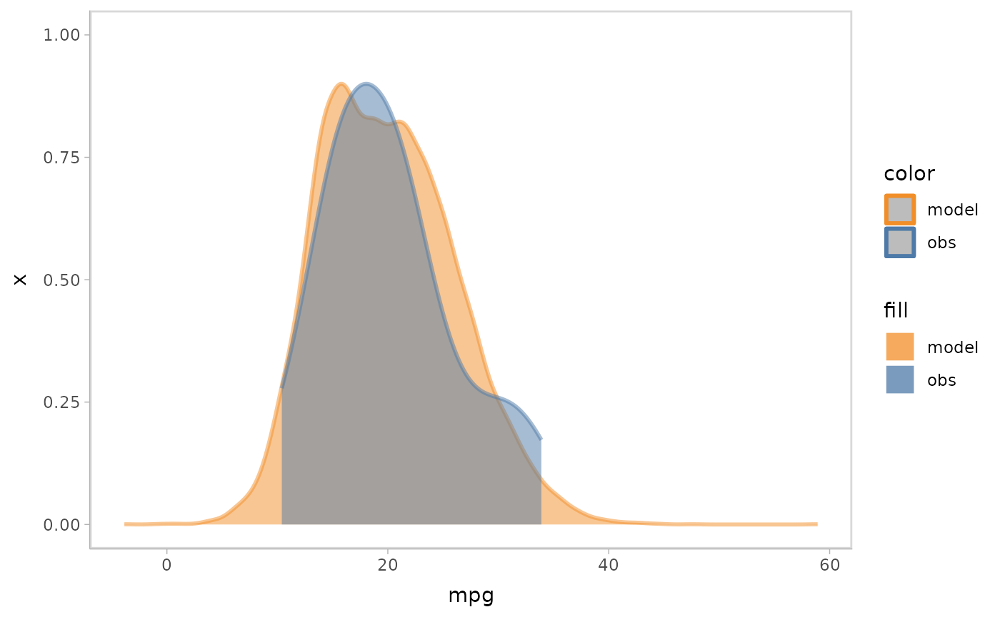

Specifying visual representations for model predictions and observed data using modelcheck
uncertainty-representation.RmdIntroduction
This vignette describes how to use the modelcheck
package to specify the visual representations used to describe the
distribution of model predictions and observed data. We developed
modelcheck to support visual representations of three
types: area/extent, visual variable, and countable icon. For a more
general introduction to modelcheck and its use on a
standard model check workflow, see
vignette("modelcheck").
Setup
The following libraries are required to run this vignette:
library(dplyr)
#>
#> Attaching package: 'dplyr'
#> The following objects are masked from 'package:stats':
#>
#> filter, lag
#> The following objects are masked from 'package:base':
#>
#> intersect, setdiff, setequal, union
library(purrr)
library(modelcheck)
library(ggplot2)
library(ggdist)
library(cowplot)
library(rstan)
#> Loading required package: StanHeaders
#> rstan (Version 2.21.8, GitRev: 2e1f913d3ca3)
#> For execution on a local, multicore CPU with excess RAM we recommend calling
#> options(mc.cores = parallel::detectCores()).
#> To avoid recompilation of unchanged Stan programs, we recommend calling
#> rstan_options(auto_write = TRUE)
library(brms)
#> Loading required package: Rcpp
#> Loading 'brms' package (version 2.20.1). Useful instructions
#> can be found by typing help('brms'). A more detailed introduction
#> to the package is available through vignette('brms_overview').
#>
#> Attaching package: 'brms'
#> The following object is masked from 'package:rstan':
#>
#> loo
#> The following objects are masked from 'package:ggdist':
#>
#> dstudent_t, pstudent_t, qstudent_t, rstudent_t
#> The following object is masked from 'package:stats':
#>
#> ar
library(gganimate)
theme_set(theme_tidybayes() + panel_border())These options help Stan run faster:
rstan_options(auto_write = TRUE)
options(mc.cores = parallel::detectCores())Model
We use the built-in model mpg_model, a
brmsfit object fitted in Gaussian model family with
push-forward transformations mu and sigma, to
demonstrate different visual representations modelcheck
defines to show the distribution of model predictions and observed
data.
mpg_model
#> Family: gaussian
#> Links: mu = identity; sigma = log
#> Formula: mpg ~ disp + vs + am
#> sigma ~ vs + am
#> Data: mtcars (Number of observations: 32)
#> Draws: 4 chains, each with iter = 6000; warmup = 3000; thin = 1;
#> total post-warmup draws = 12000
#>
#> Population-Level Effects:
#> Estimate Est.Error l-95% CI u-95% CI Rhat Bulk_ESS Tail_ESS
#> Intercept 23.25 2.87 17.57 28.92 1.00 6198 6420
#> sigma_Intercept 0.87 0.20 0.50 1.30 1.00 10336 7471
#> disp -0.02 0.01 -0.04 -0.01 1.00 6404 6672
#> vs 2.74 1.74 -0.73 6.14 1.00 6770 6991
#> am 2.74 1.81 -0.76 6.36 1.00 6100 7119
#> sigma_vs 0.27 0.34 -0.38 0.95 1.00 6544 7801
#> sigma_am 0.34 0.36 -0.38 1.03 1.00 6925 7174
#>
#> Draws were sampled using sampling(NUTS). For each parameter, Bulk_ESS
#> and Tail_ESS are effective sample size measures, and Rhat is the potential
#> scale reduction factor on split chains (at convergence, Rhat = 1).Visualizing uncertainty using area/extent
modelcheck supports a list of visual representations to
encode uncertainty using area/extent variable: -
mc_model_slab() (mc_obs_slab()) -
mc_model_ccdf() (mc_obs_ccdf()) -
mc_model_cdf() (mc_obs_cdf()) -
mc_model_eye() (mc_obs_eye()) -
mc_model_halfeye() (mc_obs_halfeye()) -
mc_model_histogram() (mc_obs_histogram()) -
mc_model_pointinterval()
(mc_obs_pointinterval()) - mc_model_interval()
(mc_obs_interval()) - mc_model_lineribbbon()
(mc_obs_lineribbon()) - mc_model_ribbon()
(mc_obs_ribbon())
Examples:
mpg_model %>%
mcplot() +
mc_model_slab(alpha = .5) +
mc_obs_slab(alpha = .5) +
mc_gglayer(coord_flip())
mpg_model %>%
mcplot() +
mc_model_slab(alpha = .5) +
mc_obs_slab(alpha = .5) +
mc_condition_on(x = vars(vs)) +
mc_gglayer(coord_flip())
mpg_model %>%
mcplot() +
mc_model_slab(alpha = .5) +
mc_obs_interval(alpha = .5) +
mc_condition_on(x = vars(vs)) +
mc_gglayer(coord_flip())
#> Warning: Duplicated aesthetics after name standardisation: alpha
mpg_model %>%
mcplot() +
mc_model_lineribbon() +
mc_obs_pointinterval() +
mc_condition_on(x = vars(disp))
Visualizing uncertainty using visual variables
modelcheck supports a list of visual representation that
encode uncertainty using diffferent visual variables: -
mc_model_gradientinterval()
(mc_obs_gradientinterval()) -
mc_model_interval() (mc_obs_interval()) -
mc_model_lineribbbon() (mc_obs_lineribbon()) -
mc_model_ribbon() (mc_obs_ribbon()) -
mc_model_tile() (mc_obs_tile())
Examples:
mpg_model %>%
mcplot() +
mc_model_gradientinterval() +
mc_obs_point(shape = '|', size = 10) +
mc_condition_on(x = vars(vs)) +
mc_gglayer(coord_flip())
#> Warning: `fill_type = "gradient"` is not supported by the current graphics device, which
#> is `"agg_png"`.
#> ℹ Falling back to `fill_type = "segments"`.
#> ℹ If you believe your current graphics device does support `fill_type =
#> "gradient"` but auto-detection failed, try setting `fill_type = "gradient"`
#> explicitly. If this causes the gradient to display correctly, then this
#> warning is likely a false positive caused by the graphics device failing to
#> properly report its support for the `"LinearGradient"` pattern via
#> `grDevices::dev.capabilities()`. Consider reporting a bug to the author of
#> the graphics device.
#> ℹ See the documentation for `fill_type` in `ggdist::geom_slabinterval()` for
#> more information.
mpg_model %>%
mcplot() +
mc_model_gradientinterval() +
mc_obs_gradientinterval() +
mc_condition_on(x = vars(vs)) +
mc_layout_nested() +
mc_gglayer(coord_flip())
#> Warning: `fill_type = "gradient"` is not supported by the current graphics device, which
#> is `"agg_png"`.
#> ℹ Falling back to `fill_type = "segments"`.
#> ℹ If you believe your current graphics device does support `fill_type =
#> "gradient"` but auto-detection failed, try setting `fill_type = "gradient"`
#> explicitly. If this causes the gradient to display correctly, then this
#> warning is likely a false positive caused by the graphics device failing to
#> properly report its support for the `"LinearGradient"` pattern via
#> `grDevices::dev.capabilities()`. Consider reporting a bug to the author of
#> the graphics device.
#> ℹ See the documentation for `fill_type` in `ggdist::geom_slabinterval()` for
#> more information.
#> `fill_type = "gradient"` is not supported by the current graphics device, which
#> is `"agg_png"`.
#> ℹ Falling back to `fill_type = "segments"`.
#> ℹ If you believe your current graphics device does support `fill_type =
#> "gradient"` but auto-detection failed, try setting `fill_type = "gradient"`
#> explicitly. If this causes the gradient to display correctly, then this
#> warning is likely a false positive caused by the graphics device failing to
#> properly report its support for the `"LinearGradient"` pattern via
#> `grDevices::dev.capabilities()`. Consider reporting a bug to the author of
#> the graphics device.
#> ℹ See the documentation for `fill_type` in `ggdist::geom_slabinterval()` for
#> more information.
Visualizing uncertainty using countable icons
modelcheck supports a list of visual representations
that encode uncertainty using countable icons: -
mc_model_dots() (mc_obs_dots()) -
mc_model_dotsinterval()
(mc_obs_dotsinterval()) - mc_model_point()
(mc_obs_point()) - mc_model_line()
(mc_obs_line())
Examples:
mpg_model %>%
mcplot() +
mc_model_dots(n_sample = 100) +
mc_obs_dots() +
mc_gglayer(coord_flip())
mpg_model %>%
mcplot() +
mc_model_slab() +
mc_obs_interval() +
mc_obs_dots(side = "left") +
mc_condition_on(x = vars(vs)) +
mc_gglayer(coord_flip())
Customize the visual representation using modelcheck
If your visual representation is not supported directly by
modelcheck, you can use mc_model_custom() and
mc_obs_custom() to pass in a geom or stat function to
specify the visual representation of model predictions and observed
data. For example, we could use
mc_model_custom(stat_boxplot) to specify a box plot for
model predictions and mc_obs_custom(geom_swarm) to specify
a swarm plot for observed data.
mpg_model %>%
mcplot() +
mc_model_custom(stat_boxplot, notch = TRUE) +
mc_obs_custom(geom_swarm) +
mc_condition_on(x = vars(vs)) +
mc_gglayer(coord_flip())